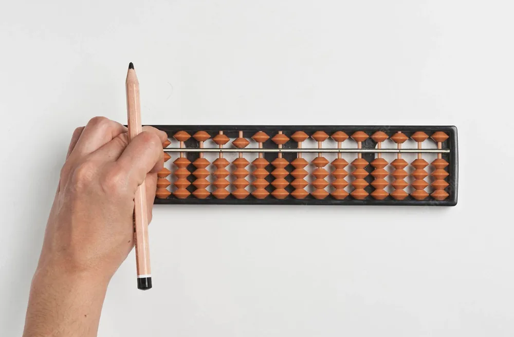

Build the basics
Abacus introduction, number representation, single-digit addition and subtraction, and simple visualisation exercises.
Learn to represent numbers, calculate with beads and build towards mental arithmetic. Join The Numbers Academy in Vidya Nagar, Hyderabad, or enquire about online abacus classes.
An abacus makes arithmetic tangible. Learners start by moving beads to represent numbers, practise addition and subtraction, and gradually learn to visualise calculations.
Regular practice gives children opportunities to work on accuracy and number familiarity. Progress depends on each learner’s starting point and practice.
Ask about abacus classes ↗
Abacus introduction, number representation, single-digit addition and subtraction, and simple visualisation exercises.
Multi-digit operations, calculation practice and mental maths foundations through visualisation.
More complex calculations, speed exercises and advanced mental arithmetic practice.
Join offline abacus classes at our Vidya Nagar centre in Hyderabad. Explore hands-on learning with face-to-face guidance.
204 C Block, Vaidehi Nivas, Golden Palms, Achyuta Reddy Marg, Vidya Nagar, Hyderabad, Telangana 500044
Explore Hyderabad classes ↗Choose online abacus learning when travelling to the centre does not fit your routine. Ask us about available online batches and learning materials.
A learning space, an abacus and an internet connection.
Explore online abacus ↗Yes. The Numbers Academy offers in-person abacus classes at 204 C Block, Vaidehi Nivas, Golden Palms, Achyuta Reddy Marg, Vidya Nagar, Hyderabad, Telangana 500044. Contact us before visiting to confirm batch availability.
Online abacus classes are available. Contact the academy to discuss the current batches, how lessons are conducted and the materials your child will need.
Students begin with number representation and addition and subtraction on an abacus, then progress to multi-digit calculations and mental arithmetic practice. The starting level depends on the learner’s current skills.
Please contact the teacher for current fees, batch timings and availability. These may vary by program, level and whether you choose online or in-person learning.
Share your child’s age, familiarity with arithmetic and learning goals with us. We can explain the differences between abacus, Vedic Maths and Rubik’s Cube training and discuss a suitable starting point.
Tell us about your child. We’ll help you explore the right program.